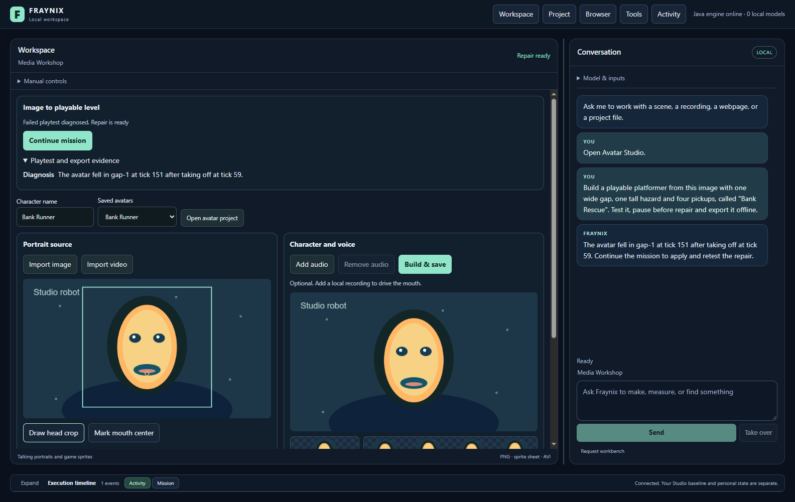
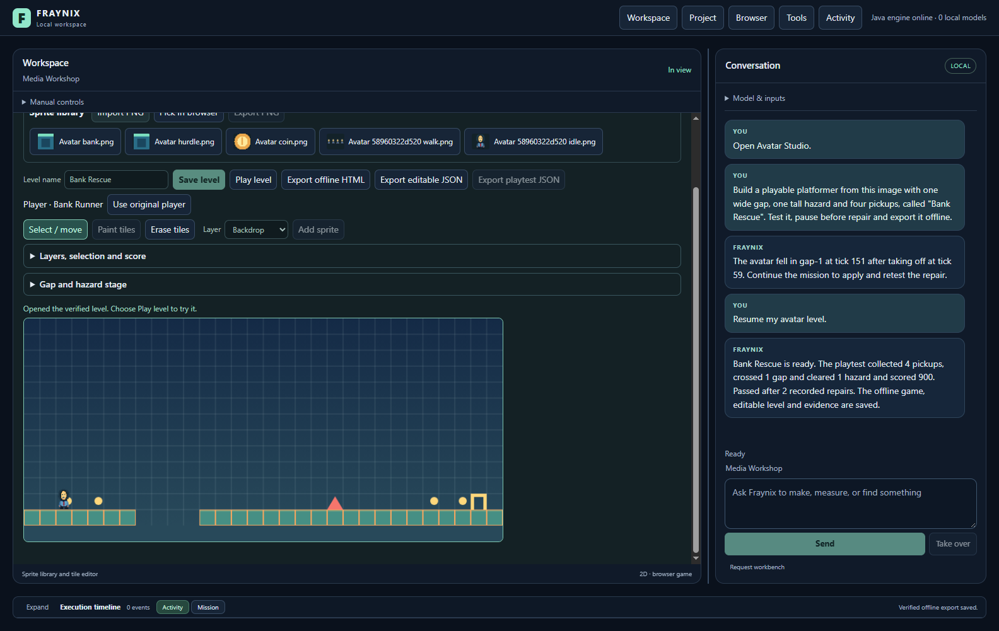
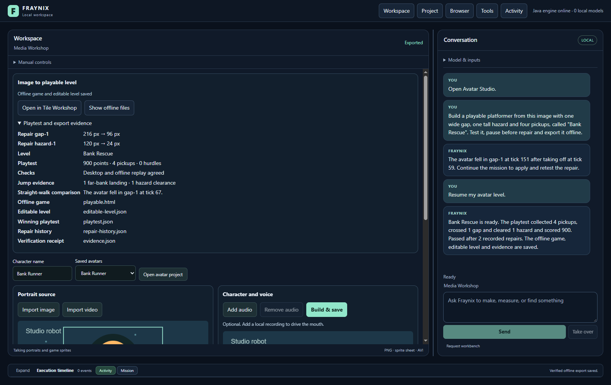

Add gaps and hazards and repair failed jumps
Play Bank Rescue with the arrow keys and Space. Review the exact geometry changes and the test results in the app guide.

A failed jump diagnosed from takeoff, fall and reset ticks

The repaired gap and spike hazard in Tile Workshop

The two measured repairs and verified offline crossing report
System files
Open source